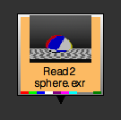
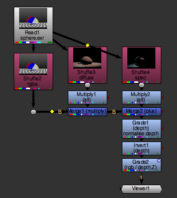
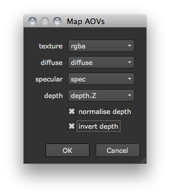
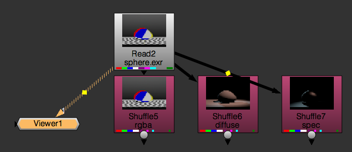

This chapter describes how to access and create channels and layers (also called channel sets).
To get all the channels that exist in the current NUKE script:
nuke.channels()
# Result:
['rgba.red', 'rgba.green', 'rgba.blue', 'rgba.alpha', 'depth.Z', 'forward.u', 'forward.v', 'backward.u', 'backward.v', 'disparityL.x', 'disparityL.y', 'disparityR.x', 'disparityR.y', 'mask.a', 'rotopaint_mask.a']
To only get the layer names:
nuke.layers()
# Result:
['rgb', 'rgba', 'alpha', 'depth', 'motion', 'forward', 'backward', 'disparity', 'disparityL', 'disparityR', 'mask', 'rotopaint_mask']
To get the selected node’s channels:
node = nuke.selectedNode()
print node.channels()
# Result:
['rgba.red', 'rgba.green', 'rgba.blue', 'rgba.alpha']
To add new channels:
nuke.Layer( 'customLayer', ['red', 'green', 'blue'] )
Note
If the layer doesn’t yet exist, it is created.
Warning
Do not add channels to the default layers, as this change is not saved with the NUKE script.
You can also rename an existing custom layer:
nuke.Layer( 'customLayer' ).setName( 'myLayer' )
Warning
Do not rename the default layers, as this causes an error when reloading the script!
This example checks the channels in an exr file and tries to combine the secondary passes to a beauty render.
 You can use the sample exr for this example.
To get started, create a function called autoComp, which takes a single node argument. This argument provides the node that carries the secondary channels or “AOVs” (“Arbitrary Output Variable”). Our first deed it to grab the node’s channels:
def autoComp( node ):
channels = node.channels()
node.channels() returns all the channels the node is holding. It’s a list of channel names like [‘rgba.red’, ‘rgba.green’, ‘rgba.blue’], and so on. To get the layer names, we can split the channel names using the dot as the delimiter and take the first part of the result:
layers = [c.split('.')[0] for c in channels]
However, this leaves us with many duplicate layer names. To get rid of all the duplicates, just convert the result to a set and then back to a list:
layers = list( set([c.split('.')[0] for c in channels]) )
Now sort the list for convenience, so the code looks like this:
def autoComp( node ):
channels = node.channels()
layers = list( set([c.split('.')[0] for c in channels]) )
layers.sort()
With all the available layers and channels at the ready, we can now build a simple UI to let the user map the available buffers to the correct pass in the comp. Create a panel with the title Map AOVs and assign three dropdown menus to it:
Each dropdown menu gets the list of layers we found as values. In this case, the values are a TCL style list, delimited by white spaces (hence the ‘ ‘.join() method):
p = nuke.Panel( 'Map AOVs' )
p.addEnumerationPulldown( 'texture', ' '.join( layers ) )
p.addEnumerationPulldown( 'diffuse', ' '.join( layers ) )
p.addEnumerationPulldown( 'specular', ' '.join( layers ) )
The user also needs to specify which channel carries the information for depth, so add another dropdown menu called depth and assign the channel list as values:
p.addEnumerationPulldown( 'depth', ' '.join( channels ) )
Lastly, we add two checkboxes to set whether we want to normalize the depth buffer (turn it on by default) or invert it (leave it off by default):
p.addBooleanCheckBox( 'normalise depth', True)
p.addBooleanCheckBox( 'invert depth', False )
That’s our simple panel done.
Note
For more control and flexibility with custom UIs, have a look at Python Panels.
To open the panel, use the show() method. This opens the panel in modal mode (non-modal mode is not available for the simple panel code). It also returns True if the panel was closed using the Ok button or False if it was canceled:
if not p.show():
return
If the panel was canceled, the code stops here. Otherwise, we store the chosen panel values in variables using value() and the respective names we assigned above.
texture = p.value( 'texture' )
diffuse = p.value( 'diffuse' )
spec = p.value( 'specular' )
depth = p.value( 'depth' )
normZ = p.value( 'normalise depth' )
invertZ = p.value( 'invert depth' )
Now it’s time to build the node tree with all the information we got from the panel.
First, let’s shuffle the texure, diffuse, and specular buffers into rgb for easier processing.
Note
This is not necessary from a compositing point of view, as you could merge all these layers/buffers inline, but for the sake of transparency we use Shuffle nodes.
To create a Shuffle node, we use nuke.nodes, set the node’s label to texture, and connect the node to the node we are operating on:
shuffleNode = nuke.nodes.Shuffle( label='texture', inputs=[node] )
Now, we set the in knob to read the layer that was specified in the panel to contain the texture information:
shuffleNode['in'].setValue( layer )
Next, we turn on the Shuffle node’s postage stamp and attach a Dot node that helps us keep a reasonably tidy layout:
shuffleNode['postage_stamp'].setValue( True )
nuke.nodes.Dot( inputs=[ shuffleNode ] )
We have to do all this for the diffuse and specular layers too, so let’s turn the above lines into a function that we can re-use:
def shuffleLayer( node, layer ):
shuffleNode = nuke.nodes.Shuffle( label=layer, inputs=[node] )
shuffleNode['in'].setValue( layer )
shuffleNode['postage_stamp'].setValue( True )
return nuke.nodes.Dot( inputs=[ shuffleNode ] )
Back in the autoComp function (and right after storing the panel values in variables), call the new function to create a Shuffle node for each of the required layers:
texNode = shuffleLayer( node, texture )
diffNode = shuffleLayer( node, diffuse )
specNode = shuffleLayer( node, spec )
Here is the code so far:
def shuffleLayer( node, layer ):
'''
Shuffle a given layer into rgba
args:
node - node to attach a Shuffle node to
layer - layer to shuffle into rgba
'''
shuffleNode = nuke.nodes.Shuffle( label=layer, inputs=[node] )
shuffleNode['in'].setValue( layer )
shuffleNode['postage_stamp'].setValue( True )
return nuke.nodes.Dot( inputs=[ shuffleNode ] )
def autoComp( node ):
channels = node.channels()
layers = list( set([c.split('.')[0] for c in channels]) )
layers.sort()
# CREATE SIMPLE PANEL TO MAP THE BUFFERS
p = nuke.Panel( 'Map AOVs' )
p.addEnumerationPulldown( 'texture', ' '.join( layers ) )
p.addEnumerationPulldown( 'diffuse', ' '.join( layers ) )
p.addEnumerationPulldown( 'specular', ' '.join( layers ) )
p.addEnumerationPulldown( 'depth', ' '.join( channels ) )
p.addBooleanCheckBox( 'normalise depth', True)
p.addBooleanCheckBox( 'invert depth', False )
if not p.show():
return
# STORE PANEL RESULt IN VARIABLES FOR EASE OF USE
texture = p.value( 'texture' )
diffuse = p.value( 'diffuse' )
spec = p.value( 'specular' )
depth = p.value( 'depth' )
normZ = p.value( 'normalise depth' )
invertZ = p.value( 'invert depth' )
# CREATE SHUFFLE NODES
texNode = shuffleLayer( node, texture )
diffNode = shuffleLayer( node, diffuse )
specNode = shuffleLayer( node, spec )
If you run the code at this point, you get the three Shuffle nodes that output the layers specified in the panel into rgba:
Now let’s attach a Multiply node to the diffuse buffer so the user can tweak it, and merge the result with the texture Shuffle node:
mergeDiff = nuke.nodes.Merge2( operation='multiply', inputs=[ texNode, nuke.nodes.Multiply( inputs=[diffNode] ) ], output='rgb' )
This is what the above line does:
Create another pair of Multiply and Merge nodes - this time for the specular node - and connect the Merge node to the Merge created above:
result = nuke.nodes.Merge2( operation='plus', inputs=[ mergeDiff, nuke.nodes.Multiply( inputs=[specNode] ) ], output='rgb' )
Now let’s check whether the user requested to normalize the depth. If yes, we run the getMinMax function and use its output in a Grade node:
if normZ:
black, white = examples.getMinMax( node, depth )
result = nuke.nodes.Grade( channels=depth, blackpoint=black, whitepoint=white, white_clamp=True, label='normalise depth', inputs=[result] )
We also check if the user requested to invert the depth channel. If yes, we append an Invert node, with channels set to depth:
if invertZ:
result = nuke.nodes.Invert( channels=depth, inputs=[result] )
Finally, we add a Grade node to lift the blacks in the image a little bit through the depth channel:
g = nuke.nodes.Grade( inputs=[result] )
g['black'].setValue( 0.05 )
g['mask'].setValue( depth )
Here’s the resulting node tree:
And the final code:
import examples
import nuke
def shuffleLayer( node, layer ):
'''
Shuffle a given layer into rgba
args:
node - node to attach a Shuffle node to
layer - layer to shuffle into rgba
'''
shuffleNode = nuke.nodes.Shuffle( label=layer, inputs=[node] )
shuffleNode['in'].setValue( layer )
shuffleNode['postage_stamp'].setValue( True )
return nuke.nodes.Dot( inputs=[ shuffleNode ] )
def autoComp( node ):
channels = node.channels()
layers = list( set([c.split('.')[0] for c in channels]) )
layers.sort()
# CREATE SIMPLE PANEL TO MAP THE BUFFERS
p = nuke.Panel( 'Map AOVs' )
p.addEnumerationPulldown( 'texture', ' '.join( layers ) )
p.addEnumerationPulldown( 'diffuse', ' '.join( layers ) )
p.addEnumerationPulldown( 'specular', ' '.join( layers ) )
p.addEnumerationPulldown( 'depth', ' '.join( channels ) )
p.addBooleanCheckBox( 'normalise depth', True)
p.addBooleanCheckBox( 'invert depth', False )
if not p.show():
return
# STORE PANEL RESULt IN VARIABLES FOR EASE OF USE
texture = p.value( 'texture' )
diffuse = p.value( 'diffuse' )
spec = p.value( 'specular' )
depth = p.value( 'depth' )
normZ = p.value( 'normalise depth' )
invertZ = p.value( 'invert depth' )
# CREATE SHUFFLE NODES
texNode = shuffleLayer( node, texture )
diffNode = shuffleLayer( node, diffuse )
specNode = shuffleLayer( node, spec )
mergeDiff = nuke.nodes.Merge2( operation='multiply', inputs=[ texNode, nuke.nodes.Multiply( inputs=[diffNode] ) ], output='rgb' )
result = nuke.nodes.Merge2( operation='plus', inputs=[ mergeDiff, nuke.nodes.Multiply( inputs=[specNode] ) ], output='rgb' )
if normZ:
black, white = examples.getMinMax( node, depth )
result = nuke.nodes.Grade( channels=depth, blackpoint=black, whitepoint=white, white_clamp=True, label='normalise depth', inputs=[result] )
if invertZ:
result = nuke.nodes.Invert( channels=depth, inputs=[result] )
g = nuke.nodes.Grade( inputs=[result] )
g['black'].setValue( 0.05 )
g['mask'].setValue( depth )